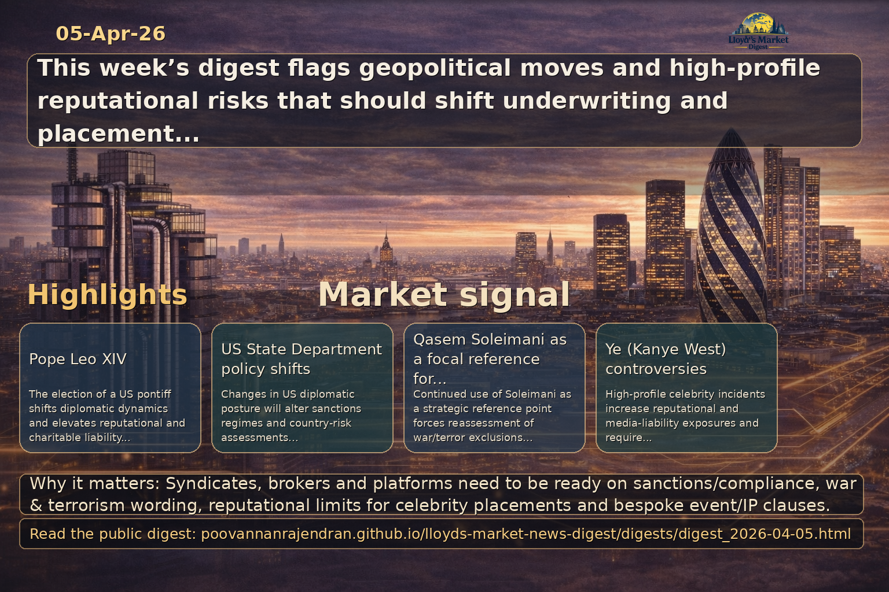

Executive summary
Key recent headlines carry direct and indirect implications for Lloyd's market participants, global specialty carriers, wholesale brokers, syndicates and placement platforms. Geopolitical shifts (new papacy, Middle East tensions, Serbia's EU trajectory, US State Department diplomacy) and domestic developments (UK/EU regulatory friction, trade union action, US crime trends, high-profile reputational incidents) change risk appetites, wordings and distribution strategies. Brokers and placement…
View LinkedIn Visual Summary

Generated from the same day's LinkedIn digest text.
Key themes
- Geopolitical & sanctions risk impacting underwriting and placements
- Political violence, terrorism and energy/commodity supply-chain exposure
- Reputational risk and celebrity/entertainment exposures in specialty lines
- Industrial action and operational resilience for BI and supply-chain covers
- Regulatory fragmentation UK/EU affecting market access and distribution
- Evolving crime and cyber trends driving claims frequency and product design
Source: newsnow.co.uk
Why it matters: Election of a new, high-profile pontiff from the United States alters diplomatic dynamics, charitable exposure profiles and reputational considerations for insurers underwriting faith-based institutions, international events and associated assets.
- Reputational exposures: advise syndicates to review endorsements, event cancellation and D&O wordings where high-profile church activity or global events are insured
- Charitable and institutional risk: assess reserve adequacy for clergy/charity-related legacy liabilities and global philanthropic portfolios
- Diplomatic/political risk: monitor Vatican diplomatic shifts that could affect embassy/mission-level political risk exposures and mediation-led risk scenarios
Source: newsnow.co.uk
Why it matters: Serbia's economic modernisation and EU candidacy change regional exposures: infrastructure, tech hubs and energy linkages create underwriting opportunities and pockets of elevated political & operational risk in the Balkans.
- Market development: brokers should position Lloyd's capacity for emerging infrastructure, cyber and tech asset classes in Belgrade and Novi Sad
- Regulatory alignment risk: syndicates must track Serbia–EU regulatory convergence that will affect local placement structures, licensing and claims handling
- Regional political risk: continuous monitoring of Balkan diplomatic friction and supply-chain routes to price political violence and business interruption appropriately
Source: newsnow.co.uk
Why it matters: High-profile celebrity controversies influence reputational, event, IP and digital-asset exposures in entertainment underwriting and corporate endorsements placed through specialty brokers and MGAs.
- Reputational & media liability: syndicates should ensure reputation-sensitive exclusions/warranties and consider capacity limits on celebrity endorsements and brand-protection covers
- Event & cancellation risk: brokers need bespoke clauses for tour/ticketing cancellations and reputational-triggered voids in cover
- Digital asset/IP exposure: review coverage terms for NFTs, crypto payments and emerging intellectual property disputes linked to celebrity ventures
Source: newsnow.co.uk
Why it matters: US State Department policy directions materially affect sanctions regimes, consular operations and sovereign risk assessments — drivers of demand for political risk, trade credit and sanctioned-entity diligence in Lloyd's placements.
- Sanctions and compliance: placement platforms and brokers must maintain real‑time screening and sanctions advisory services for syndicates to avoid restricted exposures
- Country risk repricing: syndicates should update country risk matrices where US diplomatic posture alters trade/aid flows or triggers sanctions
- Operational risk to staff: coverages for diplomatic staff evacuation, kidnap & ransom and contingency relocation should be reviewed for carriers with public-sector exposure
Source: newsnow.co.uk
Why it matters: Qasem Soleimani remains a focal reference for Iran‑related strategic risk and the persistence of asymmetric threats across the Middle East; these factors continue to shape terrorism, sabotage and war exclusions and premium loadings.
- Underwriting war & terrorism: syndicates must reassess geographic scope of war/terror exclusions and consider layered reinsurance for energy and marine exposures in the region
- Supply-chain volatility: brokers should highlight energy-market contagion and logistical disruption scenarios to corporate clients and tailor contingent BI solutions
- Personnel safety: demand for political evacuation, crisis response and kidnap & ransom products should be monitored and capacity adjusted